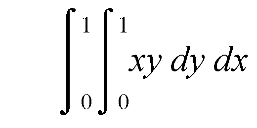
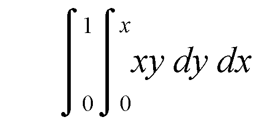

Rationale for Ada 2005
3.4 Downward closures
This section is really about access to subprogram
types in general but the title downward closures has come to epitomize
the topic.
The requirements for Ada 83, (Strawman .. Steelman)
were strangely silent about whether parameters of subprograms could themselves
be subprograms as was the case in Algol 60 and Pascal. Remember that
Pascal was one of the languages on which the designs for the DoD language
were to be based.
The predictability aspects of the requirements were
interpreted as implying that all subprogram calls should be identified
at compilation time on the grounds that if you didn't know what was being
called than you couldn't know what the program was going to do. This
was a particularly stupid attitude to take. The question of predictability
(presumably in some safety or security context) really concerns the behaviour
of particular programs rather than the universe of all programs that
can be constructed in a language.
In any event the totality of subprograms that might
be called in a program is finite and closed. It simply consists of the
subprograms in the program. Languages such as Ada are not able to construct
totally new subprograms out of lesser components in the way that they
can create say floating point values.
So the world had to use generics for many applications
that were natural for subprograms as parameters of other subprograms.
Thankfully many implementers avoided the explosion that might occur with
generics by clever code sharing which in a sense hid the parameterization
behind the scenes.
The types of applications for which subprograms are
natural as parameters are any where one subroutine is parameterized by
another. They include many mathematical applications such as integration
and maximization and more logical applications such as sorting and searching
and iterating.
As outlined in the Introduction, the matter was partly
improved in Ada 95 by the introduction of named access-to-subprogram
types. This was essentially done to allow program call back to be implemented.
Program call back is when one program passes the
"address" of a subprogram within it to another program so that
this other program can later respond by calling back to the first program
using the subprogram address supplied. This is often used for communication
between an Ada application program and some other software such as an
operating system which might even be written in another language such
as C.
Named access to subprogram
types certainly work for call back (especially with languages such as
C that do not have nested subprograms) but the accessibility rules which
followed those for general access to object types were restrictive. For
example, suppose we have a general library level function for integration
using a named access to subprogram type to pass the function to be integrated
thus
type Integrand is access function (X: Float) return Float;
function Integrate(Fn: Integrand; Lo, Hi: Float) return Float;
then we cannot even
do the simplest integration of our own function in a natural way. For
example, suppose we wish to integrate a function such as Exp(X**2).
We can try
with Integrate;
procedure Main is
function F(X: Float) return Float is
begin
return Exp(X**2);
end F;
Result, L, H: Float;
begin
... -- set bounds in L and H say
Result := Integrate(F'Access, L, H); -- illegal in Ada 95
...
end Main;
But this is illegal
because of the accessibility check necessary to prevent us from writing
something like
Evil: Integrand;
X: Float;
...
declare
Y: Float;
function F(X: Float) return Float is
...
Y := X; --assign to Y in local block
...
end F;
begin
Evil := F'Access: -- illegal
end;
X := Evil(X); -- call function out of context
Here we have attempted to assign an access to the
local function F in the global variable Evil.
If this assignment had been permitted then the call of Evil
would indirectly have called the function F
when the context in which F was declared no
longer existed; F would then have attempted
to assign to the variable Y which no longer
existed and whose storage space might now be used for something else.
We can summarise this perhaps by saying that we are attempting to call
F when it no longer exists.
Ada 2005 overcomes the problem by introducing anonymous
access to subprogram types. This was actually considered during the design
of Ada 95 but it was not done at the time for two main reasons. Firstly,
the implementation problems for those who were using display vectors
rather than static links were considered a hurdle. And secondly, a crafty
technique was available using the newly introduced tagged types. And
of course one could continue to use generics. But further thought showed
that the implementation burden was not so great provided the uses were
kept simple — and anyway nobody understood the tagged type technique
which was really incredibly contorted. Moreover, the continued use of
generics when other languages forty years ago had included a more natural
mechanism was tiresome. So at long last Ada 2005 includes anonymous access
to subprogram types.
We rewrite the integration
function much as follows
function Integrate(
Fn: access function (X: Float) return Float;
Lo, Hi: Float) return Float is
Total: Float;
N: constant Integer := ... ; -- no of subdivisions
Step: Float := (Hi – Lo) / Float(N);
X: Float := Lo; -- current point
begin
Total := 0.5 * Fn(Lo); -- value at low bound
for I in 1 .. N–1 loop
X := X + Step; -- add values at
Total := Total + Fn(X); -- intermediate points
end loop;
Total := Total + 0.5 * Fn(Hi); -- add final value
return Total * Step; -- normalize
end Integrate;
The important thing to notice is the profile of Integrate
in which the parameter Fn is of an anonymous
access to subprogram type. We have also shown a simple body which uses
the trapezium/trapezoid method and so calls the actual function corresponding
to Fn at the two end points of the range and
at a number of equally spaced intermediate points.
(NB It is time for a linguistic interlude. Roughly
speaking English English trapezium equals US English trapezoid. They
both originate from the Greek τραπεζα
meaning a table (literally with four feet). Both originally meant a quadrilateral
with no pairs of sides parallel. In the late 17th century, trapezium
came to mean having one pair of sides parallel. In the 18th century trapezoid
came to mean the same as trapezium but promptly faded out of use in England
whereas in the US it continues in use. Meanwhile in the US, trapezium
reverted to its original meaning of totally irregular. Trapezoid is rarely
used in the UK but if used has reverted to its original meaning of totally
irregular. A standard language would be useful. Anyway, the integration
is using quadrilateral strips with one pair of sides parallel.)
With this new declaration of Integrate,
the accessibility problems are overcome and we are allowed to write Integrate(F'Access,
... ) just as we could write P(X'Access)
in the example in the previous section where we discussed anonymous access
to object types.
We still have to consider how a type conversion which
would permit an assignment to a global variable is prevented. The following
text illustrates both access to object and access to subprogram parameters.
type AOT is access all Integer;
type APT is access procedure (X: in out Float);
Evil_Obj: AOT;
Evil_Proc: APT;
procedure P(
Objptr: access Integer;
Procptr: access procedure (X: in out Float)) is
begin
Evil_Obj := AOT(Objptr); -- fails at run time
Evil_Proc := APT(Procptr); -- fails at compile time
end P;
declare
An_Obj: aliased Integer;
procedure A_Proc(X: in out Float) is
begin ... end A_Proc;
begin
P(An_Obj'Access, A_Proc'Access); -- legal
end;
Evil_Obj.all := 0; -- assign to nowhere
Evil_Proc.all( ... ); -- call nowhere
This repeats some of the structure of the previous
section. The procedure P has an access to
object parameter Objptr and an access to subprogram
parameter Procptr; they are both of anonymous
type. The call of P in the local block passes
the addresses of a local object An_Obj and
a local procedure A_Proc to P.
This is permitted. We now attempt to assign the parameter values from
within P to global objects Evil_Obj
and Evil_Proc with the intent of assigning
indirectly via Evil_Obj and calling indirectly
via Evil_Proc after the object and procedure
referred to no longer exist.
Both of these wicked deeds are prevented by the accessibility
rules.
In the case of the object parameter Objptr
it knows the accessibility level of the actual An_Obj
and this is seen to be greater than that of the type AOT
and so the conversion is prevented at run time and in fact Program_Error
is raised. But if An_Obj had been declared
at the same level as AOT and not within an
inner block then the conversion would have been permitted.
However, somewhat different rules apply to anonymous
access to subprogram parameters. They do not carry an indication of the
accessibility level of the actual parameter but simply treat it as if
it were infinite (strictly – deeper than anything else). This of
course prevents the conversion to the type APT
and all is well; this is detected at compile time. But note that if the
procedure A_Proc had been declared at the
same level as APT then the conversion would
still have failed because the accessibility level is treated as infinite.
There are a number of reasons for the different treatment
of anonymous access to subprogram types. A big problem is that named
access to subprogram types are implemented in the same way as C *func
in almost all compilers. Permitting the conversion from anonymous access
to subprogram types to named ones would thus have caused problems because
that model does not work especially for display based implementations.
Carrying the accessibility level around would not have prevented these
conversions. The key goal was simply to provide a facility corresponding
to that in Pascal and not to encourage too much fooling about with access
to subprogram types. Recall that the attribute Unchecked_Access
is permitted for access to object types but was considered far too dangerous
for access to subprogram types for similar reasons.
The reader may be feeling
both tired and that there are other ways around the problems of accessibility
anyway. Thus the double integration presented in the Introduction can
easily be circumvented in many cases. We computed

using the following
program
with Integrate;
procedure Main is
function G(X: Float) return Float is
function F(Y: Float) return Float is
begin
return X*Y;
end F;
begin
return Integrate(F'Access, 0.0, 1.0);
end G;
Result: Float;
begin
Result:= Integrate(G'Access, 0.0, 1.0);
...
end Main;
The essence of the
problem was that F had to be declared inside
G because it needed access to the parameter
X of G. But the
astute reader will note that this example is not very convincing because
the integrals can be separated and the functions both declared at library
level thus
function F(Y: Float) return Float is
begin
return Y;
end F;
...
function G(X: Float) return Float is
begin
return X;
end G;
Result:= Integrate(F'Access, 0.0, 1.0) * Integrate(G'Access, 0.0, 1.0);
and so it all works using the Ada 95 version of Integrate
anyway.
However, if the two
integrals had been more convoluted or perhaps the region had not been
square but triangular so that the bound of the inner integral depended
on the outer variable as in

then nested functions would be vital.
We will now consider a more elegant example which
illustrates how we might integrate an arbitrary function of two variables
F(x, y) over a rectangular region.
Assume that we have
the function Integrate for one dimension as
before
function Integrate(
Fn: access function(X: Float) return Float;
Lo, Hi: Float) return Float;
Now consider
function Integrate(
Fn: access function(X: Float) return Float;
LoX, HiX: Float;
LoY, HiY: Float) return Float is
function FnX(X: Float) return Float is
function FnY(Y: Float) return Float is
begin
return Fn(X, Y);
end FnY;
begin
return Integrate(FnY'Access, LoY, HiY);
end FnX;
begin
return Integrate(FnX'Access, LoX, HiX);
end integrate;
The new function Integrate
for two dimensions overloads and uses the function Integrate
for one dimension (a good example of overloading). With this generality
it is again impossible to arrange the structure in a manner which is
legal in Ada 95.
We might use the two-dimensional
integration routine to solve the original trivial problem as follows
function F(X, Y: Float) return Float is
begin
return X*Y;
end F;
...
Result := Integrate(F'Access, 0.0, 1.0, 0.0, 1.0);
As an exercise the
reader might like to rewrite the two dimensional function to work on
a non-rectangular domain. The trick is to pass the bounds of the inner
integral also as functions. The profile then becomes
function Integrate(
Fn: access function (X, Y: Float) return Float;
LoX, HiX: Float;
LoY, HiY: access function(X: Float) return Float)
return Float;
In case the reader should think that this topic is
all too mathematical it should be pointed out that anonymous access to
subprogram parameters are widely used in the new container library thereby
saving the unnecessary use of generics.
For example the package
Ada.Containers.Vectors declares procedures
such as
procedure Update_Element
(Container: in Vector; Index: in Index_Type;
Process: not null access procedure (Element: in out Element_Type));
This updates the element
of the vector Container whose index is Index
by calling the procedure Process with that
element as parameter. Thus if we have a vector of integers V
and we need to double the value of those with index in the range 5 to
10, then we would first declare a procedure such as
procedure Double(E: in out Integer) is
begin
E := 2 * E;
end Double;
and then write
for I in 5 .. 10 loop
Update_Element(V, I, Double'Access);
end loop;
Further details of the use of access to subprogram
types with containers will be found in a later chapter (see
8.2).
Finally it should be noted that anonymous access
to subprogram types can also be used in all those places where anonymous
access to object types are allowed. That is as stand-alone objects, as
components of arrays and records, as function results, in renamings,
and in access discriminants.
The reader who likes
long sequences of reserved words should realise by now that there is
no limit in Ada 2005. This is because a function without parameters can
return an access to function as its result and this in turn could be
of a similar kind. So we would have
type FF is access function return access function return access function ...
Attempts to compile such an access to function type
will inevitably lead to madness.
© 2005, 2006, 2007 John Barnes Informatics.
Sponsored in part by: